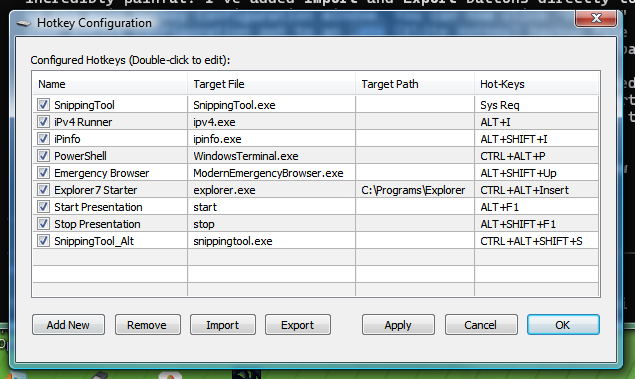
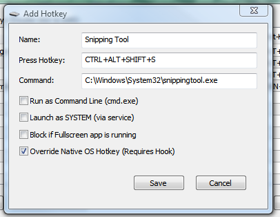
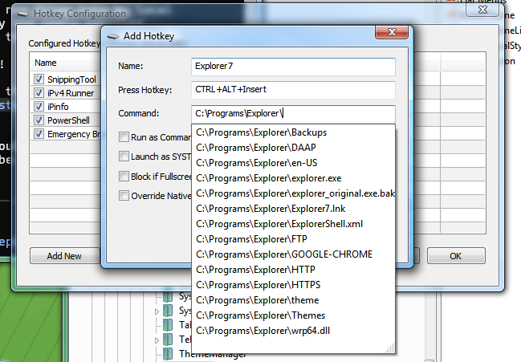
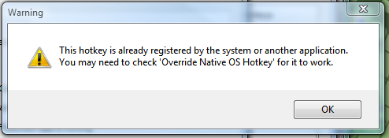

Welcome to the official documentation for Elite Hotkey Service. This tool provides an incredibly powerful, system-wide hotkey manager that runs securely as a Windows Service, allowing you to bypass standard User Account Control (UAC) limitations and manage your system effortlessly.
The main configuration GUI allows you to view, add, edit, and remove your custom hotkeys. By default, the application runs silently in the system tray to ensure your hotkeys work out of the box after a reboot without presenting unwanted windows.

Features of the main window:
Double-clicking an item in the list or clicking "Add New" will open the Hotkey Configuration dialog.


When recording a hotkey, the dialog uses a Low-Level Keyboard Hook to perfectly capture your physical keystrokes without accidentally triggering system actions while you are trying to type them.
| Option | Description |
|---|---|
| Run as Command Line | If checked, the target path is executed via cmd.exe /c instead of a standard shell launch. Useful for batch scripts or complex arguments. |
| Run as System | Leverages the background Windows Service to launch the target as the NT AUTHORITY\SYSTEM user. This grants the highest possible privileges and completely bypasses UAC prompts. |
| Block in Fullscreen | If checked, the hotkey will gracefully ignore your press if a fullscreen application (like a video game or movie) is active, preventing accidental interruptions. |
| Low Level Hook Override | By default, standard hotkeys are registered using the OS RegisterHotKey API. However, Windows blocks certain combinations (like WIN+R or WIN+E). By checking this box, the tool uses a low-level hook to aggressively swallow the native shortcut and force your custom action instead. |
The application is smart enough to detect if you are trying to assign a hotkey combination that you've already assigned to another action.

When editing an existing hotkey, it intelligently ignores itself during the conflict check so you aren't warned unnecessarily. Warning dialogs also force themselves to the very top so they never open hidden behind the main application window.
HKCU/HKLM\SOFTWARE\EliteSoftware\Hotkeys\ServiceV5 and IPC pipes are used to communicate with the service.
Limitations to keep in mind:
Enjoy using Elite Hotkey Service, designed for maximum productivity and system control.